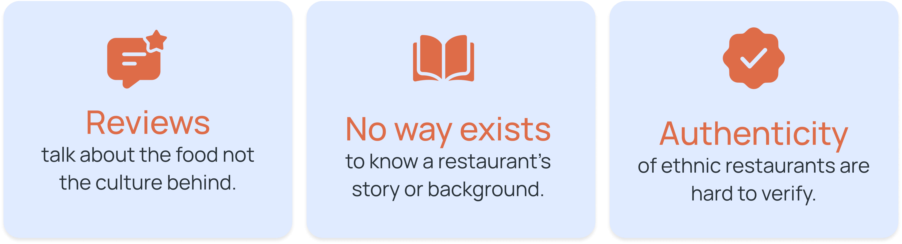
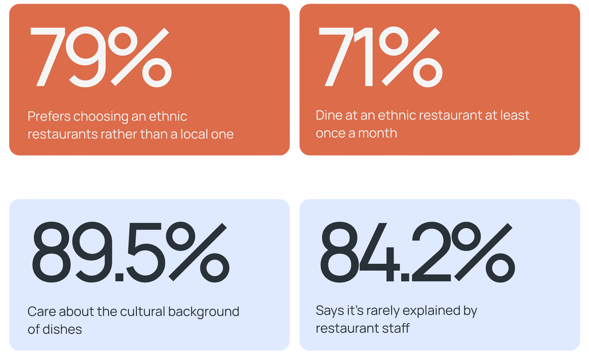
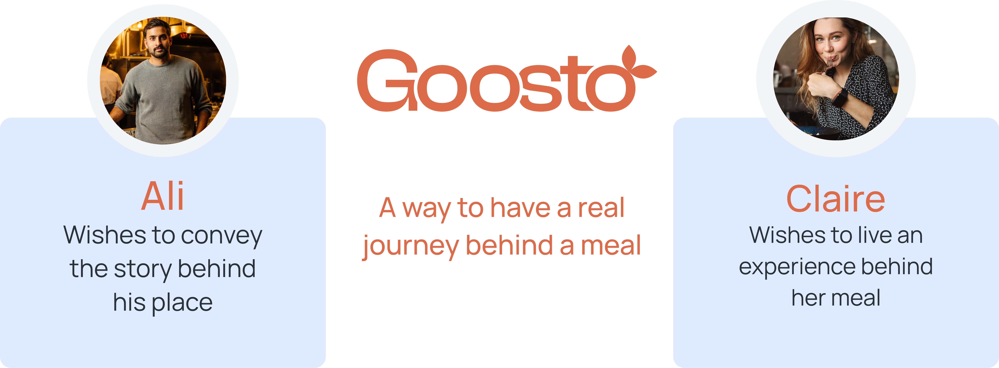
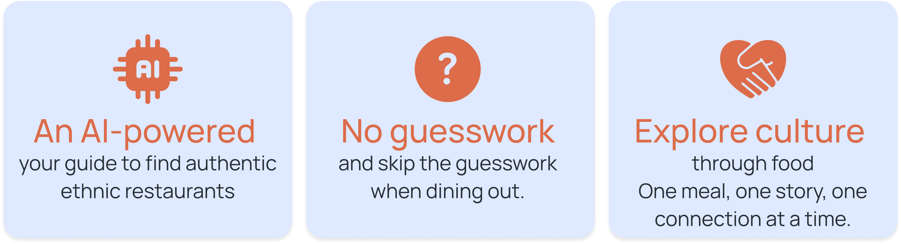
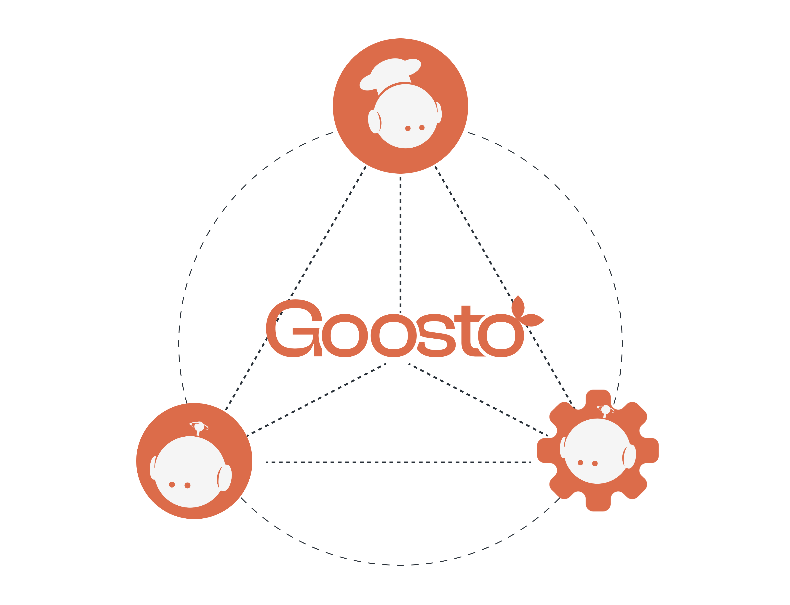
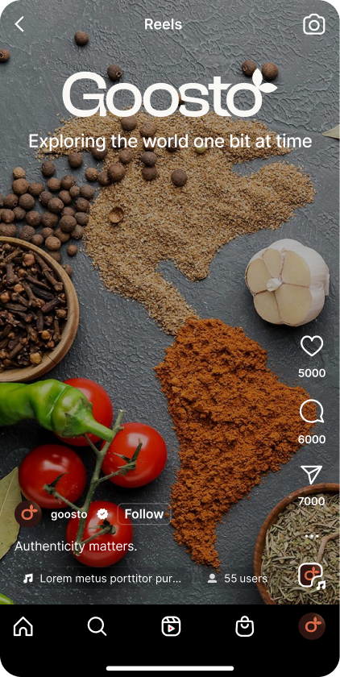
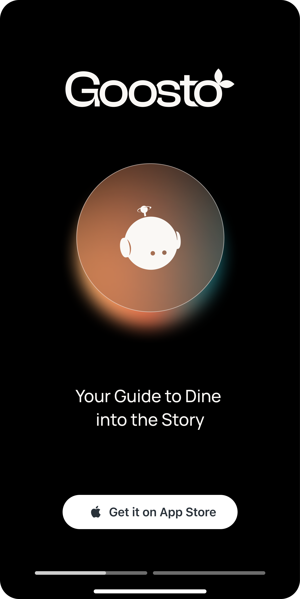

Goosto
An AI-powered guide to discovering the stories behind food.
Concept
Goosto is an ethnic restaurant discovery app that connects food lovers with authentic culinary experiences around them and beyond. More than just a dining guide, it empowers restaurant owners to share the heart and soul of their cuisine, while offering users AI-driven recommendations to explore new flavors and communities.

The Challenge
Discovering a restaurant is often reduced to ratings, reviews, and food photos. But for ethnic restaurants, much of what makes the experience meaningful lies beyond the plate: the culture, traditions, people, and stories behind the food.

Research Insights
We combined desk research with primary research to understand how people discover ethnic restaurants and what they expect from the experience. The research confirmed a strong interest in authentic cuisine, while revealing that the cultural context behind it is often missing.

Target Users
Goosto connects two complementary needs: restaurant owners who want to communicate the story behind their cuisine, and curious diners who want to experience it.

Design direction
The platform combines cultural storytelling, verified local knowledge, and intelligent recommendations to help people discover places that resonate with their interests.

Agents
Goosto uses a multi-agent system where specialised agents work together behind the experience. Each agent has a distinct role, from helping restaurant owners tell their stories to understanding user preferences and providing recommendations in real time.

Visual identity

Digital product
Social content
Goosto's experience extends beyond the app. To build awareness around the idea of discovering cultures through food, we developed a communication strategy centred around visual storytelling and short-form content.


Physical mockup